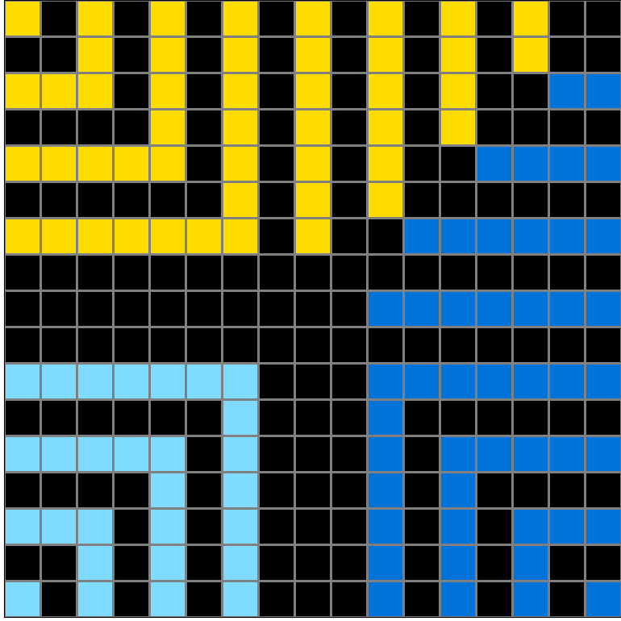
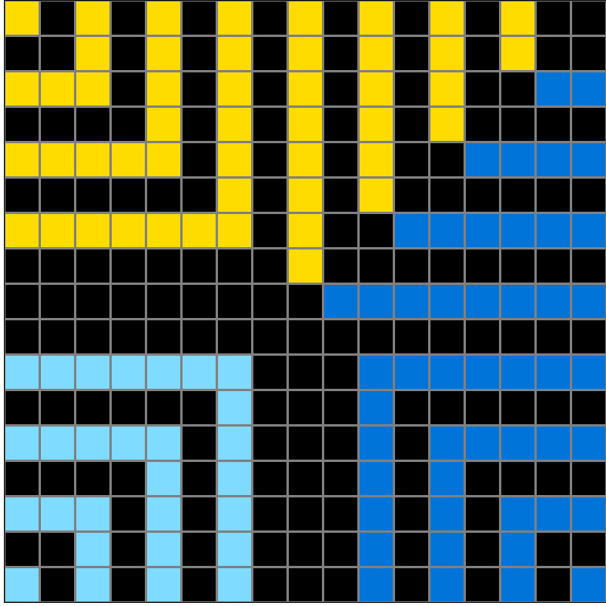
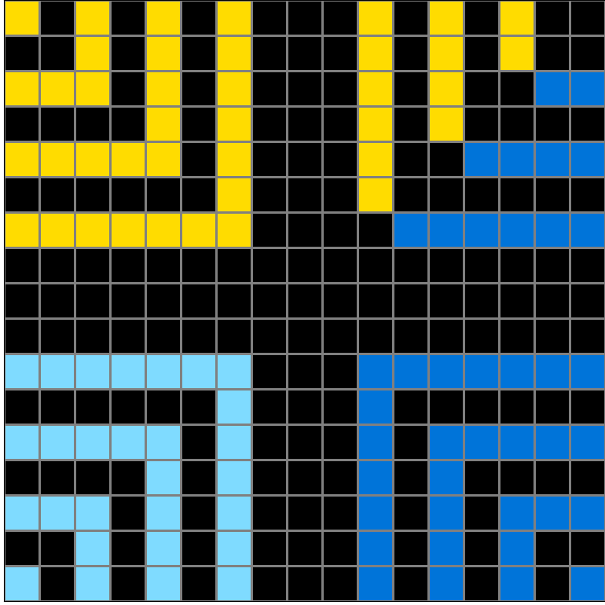
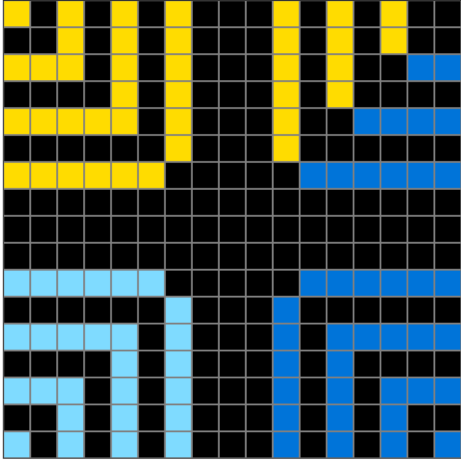
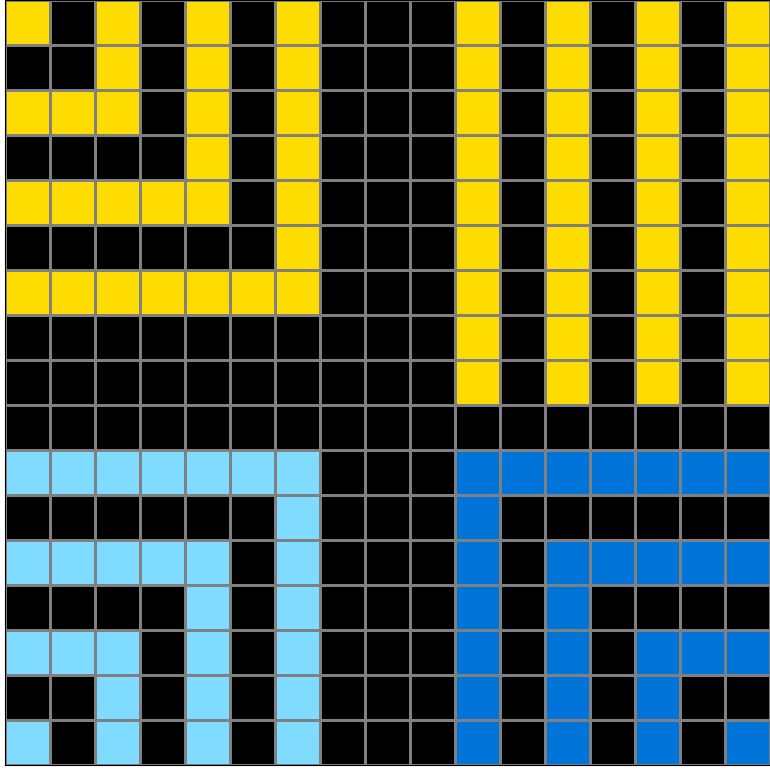

d22278a0.json
Navigation
Train Examples


Test Example


Participant 1
Initial description: Recreate a grid the same size as the original. Starting at each corner that has a colored tile, skip a tile between and color in the next tile in the same color. There will be a partial square radiating from the corner in the same color. Keep alternating black tiles with tiles of the same color so that you have larger and larger partial squares radiating from the corners. Color in tiles as you go but stop when colors might overlap or come into contact with each other.
Final description: Recreate a grid the same size as the input. Copy the colored tiles from the original grid. Starting from the original colored tiles, skip a tile and then color the next tile the same color as the original. This will create a partial square radiating from the corner in the same color as the original tile. Keep doing this to fill in the grid. You will end up with more partial squares with black lines between radiating from the corners. Stop when colors may overlap or come into contact with each other. It is ok if they touch at the corners, but not along a side.


Participant 2
Initial description: Colors radiate out from the corners, skipping every other row. If no color in the corner, it takes the two closest colors for each half, leaving a gap at the corners.
Final description: The colors radiate from the corner colors, skipping a row. The corner without a color either takes the two nearest colors to form each side of the radiating pattern, or it becomes lines from the color on that side.


